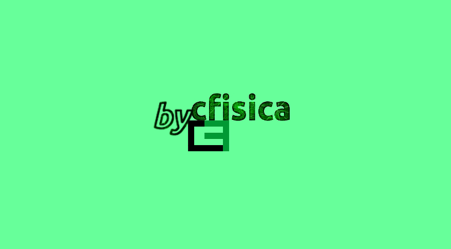

Cássio Sanguini Sergio
Professor Doutor em Física,
Departamento de Física, Universidade Federal de Roraima.
Construí bycfisica para compartilhar notas de aula e outras pesquisas,
na ocasião, pensei:
Material não compartilhado é material não existente.
De lá para cá, tenho dedicado tempo ao site.
Como mencionei na abertura,
há artigos sobre Mecânica Quântica (fundamentos e aplicações)
na aba Posts e cópias para baixar na aba PDF.
Os artigos possuem tags (rótulos) e, na aba Tags, são encontrados por temas.
A Tabela abaixo relaciona o tema com a tag:
| Tema | Tag |
|---|---|
| Vibração e ausência de vibração | Vibração |
| Momento angular orbital | Orbital |
| Momento angular de spin | Spin |
| Momento angular genérico | Operador J |
| Adição de momento angular | Acoplamento |
| Poço Quântico | Poço |
| Técnico sobre matemática | Técnico |
Gosto de digitar no editor de texto vi.
Para escrever textos e equações e fazer gráficos,
utilizo a linguagem de programação R
com os pacotes bookdown e ggplot2 e,
para construir sites, o pacote blogdown associado
com um tema do gerador de site estático Hugo —
escolhi, para este site, o tema Academia Hugo.
A hospedagem é feita na plataforma de hospedagem Netlify
e o código-fonte está armazenado
na plataforma de projetos GitHub (ver link na foto).
Na aba e botão Livro,
coloquei um link para o meu livro sobre Mecânica Quântica.
A pesquisa, escrita e revisão duraram cerca de 3 anos.
A revisão foi feita pelo
Prof. Dr. Celso de Araujo Duarte, do Departamento de Física da Universidade Federal do Paraná – UFPR.
A primeira edição foi publicada em setembro de 2016, pela Editora Letras e Versos.
Foram impressos 20 exemplares — as despesas foram por minha conta.
Fiz a renderização HTML em setembro de 2019.
Agora, tenho o prazer de convidá-lo para ler
Mecânica Quântica: Confinamento e Espalhamento por Potenciais Retangulares.
Caso queira conhecer melhor minha formação acadêmica e atuação profissional,
o botão Lattes direciona para meu currículo Lattes.

Lattes LivroFormação
-
Doutorado em Física, 2003
Universidade de São Paulo, USP, Brasil
-
Mestrado em Física, 1999
Universidade de São Paulo, USP, Brasil
-
Graduação em Fisica, 1989
Universidade Estadual de Campinas, UNICAMP, Brasil
Interesses
- Física dos Aglomerados
- Física da Matéria Condensada
- Fundamentos da Mecânica Quântica